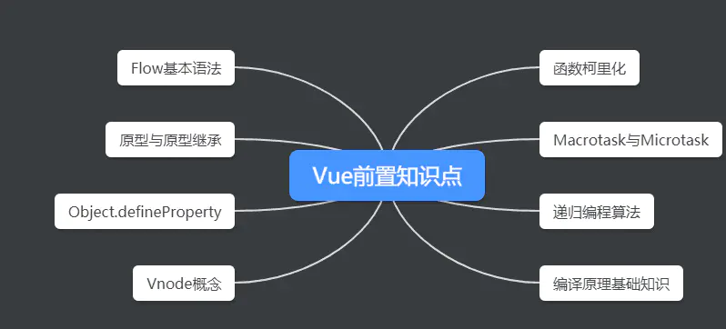
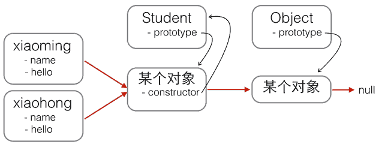
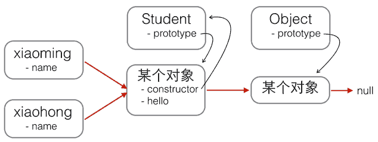
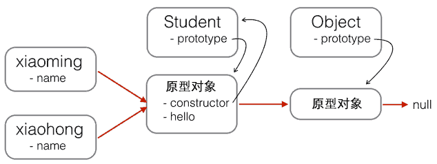
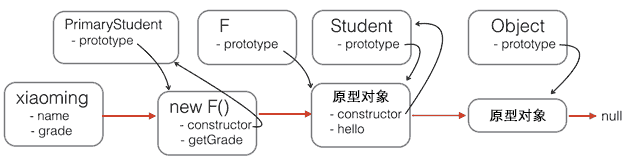

之前有尝试看过Vue源码，但是理解都不是很深刻动不动就忘记了，现在来把前置条件学习一下。

Flow基本语法
javascript是弱类型的语言，在写代码灰常爽的同时也十分容易犯错误，所以Facebook搞了这么一个类型检查工具，可以加入类型的限制，提高代码质量，举个例子:
function sum(a, b) {
return a + b;
}
如果这么调用这个函数sum(‘a’, 1) 甚至sum(1, [1,2,3])这么调用，执行时会得到一些你想不到的结果，这样编程未免太不稳定了。那我们看看用了Flow之后的结果：
function sum(a: number, b:number) {
return a + b;
}
多了一个number的限制，标明对a和b只能传递数字类型的，否则的话用Flow工具检测会报错。
其实这里大家可能有疑问，这么写还是js吗？ 浏览器还能认识执行吗？当然不认识了，所以需要翻译或者说编译。其实现在前端技术发展太快了，各种插件层出不穷–Babel、Typescript等等，其实都是将一种更好的写法编译成浏览器认识的javascript代码（我们以前都是写浏览器认识的javascript代码的）。
我们继续说Flow的事情，在Vue源码中其实出现的Flow语法都比较好懂，比如下面这个函数的定义:
export function renderList (
val: any,
render: (
val: any,
keyOrIndex: string | number,
index?: number
) => VNode
): ?Array<VNode>{
...
}
val是any代表可以传入的类型是任何类型;
keyOrIndex是string|number类型，代表要不是string类型，要不是number，不能是别的;
index?:number这个我们想想正则表达式中？的含义—0个或者1个，这里其实意义也是一致的，但是要注意?的位置是在冒号之前还是冒号之后–因为这两种可能性都有，上面代码中问号是跟在冒号前面，代表index可以不传，但是传的话一定要传入数字类型；如果问号是在冒号后面的话，则代表这个参数必须要传递，但是可以是数字类型也可以是空。
如果想学习Flow更多的细节， 可以看看下面这个学习文档：
原型与原型继承
原型链
创建对象
用obj.xxx访问一个对象的属性时，JavaScript引擎先在当前对象上查找该属性，如果没有找到，就到其原型对象上找，如果还没有找到，就一直上溯到Object.prototype对象，最后，如果还没有找到，就只能返回undefined。
创建一个Array对象：
var arr = [1, 2, 3];
其原型链是：
arr ----> Array.prototype ----> Object.prototype ----> null
Array.prototype定义了indexOf()、shift()等方法，因此你可以在所有的Array对象上直接调用这些方法。
创建一个函数：
function foo() {
return 0;
}
函数也是一个对象，它的原型链是：
foo ----> Function.prototype ----> Object.prototype ----> null
由于Function.prototype定义了apply()等方法，因此，所有函数都可以调用apply()方法。
如果原型链很长，那么访问一个对象的属性就会因为花更多的时间查找而变得更慢，因此要注意不要把原型链搞得太长。
构造函数
除了直接用{ ... }创建一个对象外，JavaScript还可以用一种构造函数的方法来创建对象。
function Student(name) {
this.name = name;
this.hello = function () {
alert('Hello, ' + this.name + '!');
}
}
var xiaoming = new Student('小明');
xiaoming.name; // '小明'
xiaoming.hello(); // Hello, 小明!
如果不写new，这就是一个普通函数，它返回undefined。但是，如果写了new，它就变成了一个构造函数，它绑定的this指向新创建的对象，并默认返回this，也就是说，不需要在最后写return this;。
新创建的xiaoming的原型链是：
xiaoming ----> Student.prototype ----> Object.prototype ----> null
所以，xiaoming的原型指向函数Student的原型。如果你又创建了xiaohong、xiaojun，那么这些对象的原型与xiaoming是一样的：
xiaoming ↘
xiaohong -→ Student.prototype ----> Object.prototype ----> null
xiaojun ↗
用new Student()创建的对象还从原型上获得了一个constructor属性，它指向函数Student本身：
xiaoming.constructor === Student.prototype.constructor; // true
Student.prototype.constructor === Student; // true
Object.getPrototypeOf(xiaoming) === Student.prototype; // true
xiaoming instanceof Student; // true

红色箭头是原型链。注意，Student.prototype指向的对象就是xiaoming、xiaohong的原型对象，这个原型对象自己还有个属性constructor，指向Student函数本身。
另外，函数Student恰好有个属性prototype指向xiaoming、xiaohong的原型对象，但是xiaoming、xiaohong这些对象可没有prototype这个属性，不过可以用__proto__这个非标准用法来查看。
现在我们就认为xiaoming、xiaohong这些对象“继承”自Student。
xiaoming.name; // '小明'
xiaohong.name; // '小红'
xiaoming.hello; // function: Student.hello()
xiaohong.hello; // function: Student.hello()
xiaoming.hello === xiaohong.hello; // false
-
xiaoming和xiaohong各自的name不同，这是对的，否则我们无法区分谁是谁了。 -
xiaoming和xiaohong各自的hello是一个函数，但它们是两个不同的函数，虽然函数名称和代码都是相同的！
如果我们通过new Student()创建了很多对象，这些对象的hello函数实际上只需要共享同一个函数就可以了，这样可以节省很多内存。
要让创建的对象共享一个hello函数，根据对象的属性查找原则，我们只要把hello函数移动到xiaoming、xiaohong这些对象共同的原型上就可以了，也就是Student.prototype：

function Student(name) {
this.name = name;
}
Student.prototype.hello = function () {
alert('Hello, ' + this.name + '!');
};
用new创建基于原型的JavaScript的对象就是这么简单！
原型继承
JavaScript由于采用原型继承，我们无法直接扩展一个Class，因为根本不存在Class这种类型。
上文，Student构造函数：
function Student(props) {
this.name = props.name || 'Unnamed';
}
Student.prototype.hello = function () {
alert('Hello, ' + this.name + '!');
}
所以，Student的原型链：

基于Student扩展出PrimaryStudent，可以先定义出PrimaryStudent：
function PrimaryStudent(props) {
// 调用Student构造函数，绑定this变量:
Student.call(this, props);
this.grade = props.grade || 1;
}
调用了Student构造函数不等于继承了Student，PrimaryStudent创建的对象的原型是：
new PrimaryStudent() ----> PrimaryStudent.prototype ----> Object.prototype ----> null
必须想办法把原型链修改为：
new PrimaryStudent() ----> PrimaryStudent.prototype ----> Student.prototype ----> Object.prototype ----> null
这样新的基于PrimaryStudent创建的对象不但能调用PrimaryStudent.prototype定义的方法，也可以调用Student.prototype定义的方法。
如果你想用最简单粗暴的方法这么干：
PrimaryStudent.prototype = Student.prototype;
这样的话，PrimaryStudent和Student共享一个原型对象，那还要定义PrimaryStudent干啥？
我们必须借助一个中间对象来实现正确的原型链，这个中间对象的原型要指向Student.prototype。
// PrimaryStudent构造函数:
function PrimaryStudent(props) {
Student.call(this, props); // // 调用Student构造函数，绑定this变量:
this.grade = props.grade || 1;
}
// 空函数F:
function F() {
}
// 把F的原型指向Student.prototype:
F.prototype = Student.prototype;
// 把PrimaryStudent的原型指向一个新的F对象，F对象的原型正好指向Student.prototype:
PrimaryStudent.prototype = new F();
// 以上三句也可改成
// PrimaryStudent.prototype = Object.Create(Student.prototype);
// 把PrimaryStudent原型的构造函数修复为PrimaryStudent:
PrimaryStudent.prototype.constructor = PrimaryStudent;
// 继续在PrimaryStudent原型（就是new F()对象）上定义方法：
PrimaryStudent.prototype.getGrade = function () {
return this.grade;
};
// 创建xiaoming:
var xiaoming = new PrimaryStudent({
name: '小明',
grade: 2
});
xiaoming.name; // '小明'
xiaoming.grade; // 2
// 验证原型:
xiaoming.__proto__ === PrimaryStudent.prototype; // true
xiaoming.__proto__.__proto__ === Student.prototype; // true
// 验证继承关系:
xiaoming instanceof PrimaryStudent; // true
xiaoming instanceof Student; // true
新的原型链：

注意函数F仅用于桥接，我们仅创建了一个new F()实例，而且，没有改变原有的Student定义的原型链。
如果把继承这个动作用一个inherits()函数封装起来，还可以隐藏F的定义，并简化代码：
function inherits(Child, Parent) {
var F = function () {};
F.prototype = Parent.prototype;
Child.prototype = new F();
// 以上也可改成
// Child.prototype = Object.Create(Parent.prototype);
Child.prototype.constructor = Child;
}
这个inherits()函数可以复用：
function Student(props) {
this.name = props.name || 'Unnamed';
}
Student.prototype.hello = function () {
alert('Hello, ' + this.name + '!');
}
function PrimaryStudent(props) {
Student.call(this, props);
this.grade = props.grade || 1;
}
// 实现原型继承链:
inherits(PrimaryStudent, Student);
// 绑定其他方法到PrimaryStudent原型:
PrimaryStudent.prototype.getGrade = function () {
return this.grade;
};
构造函数的继承
- 构造函数绑定
- prototype模式
- 直接继承prototype
- 利用空对象作为中介
- 拷贝继承
最简单的方法，使用call或apply方法，将父对象的构造函数绑定在子对象上
function Cat(name,color){
Animal.apply(this, arguments);
this.name = name;
this.color = color;
}
var cat1 = new Cat("大毛","黄色");
alert(cat1.species); // 动物
prototype模式
如下：
Cat.prototype = new Animal(); // 将Cat的prototype对象指向一个Animal的实例,
// 它相当于完全删除了prototype 对象原先的值，然后赋予一个新值
Cat.prototype.constructor = Cat;
var cat1 = new Cat("大毛","黄色");
alert(cat1.species); // 动物
任何一个prototype对象都有一个constructor属性，指向它的构造函数。
如果没有”Cat.prototype = new Animal();”这一行，Cat.prototype.constructor是指向Cat的；加了这一行以后，Cat.prototype.constructor指向Animal
alert(Cat.prototype.constructor == Animal); //true
每一个实例也有一个constructor属性，默认调用prototype对象的constructor属性
alert(cat1.constructor == Cat.prototype.constructor); // true
因此，在运行”Cat.prototype = new Animal();”这一行之后，cat1.constructor也指向Animal！
这显然会导致继承链的紊乱（cat1明明是用构造函数Cat生成的），因此我们必须手动纠正，将Cat.prototype对象的constructor值改为Cat。
直接继承prototype
第三种方法是对第二种方法的改进。由于Animal对象中，不变的属性都可以直接写入Animal.prototype。所以，我们也可以让Cat()跳过 Animal()，直接继承Animal.prototype。
Cat.prototype = Animal.prototype;
Cat.prototype.constructor = Cat; // 实际上把Animal.prototype对象的constructor属性也改掉了
var cat1 = new Cat("大毛","黄色");
alert(cat1.species); // 动物
这样做的优点是效率比较高（不用执行和建立Animal的实例了），比较省内存。缺点是 Cat.prototype和Animal.prototype现在指向了同一个对象，那么任何对Cat.prototype的修改，都会反映到Animal.prototype。
利用空对象作为中介
如下：
var F = function(){}; // F是空对象，所以几乎不占内存
F.prototype = Animal.prototype;
Cat.prototype = new F();
Cat.prototype.constructor = Cat; // 修改Cat的prototype对象，就不会影响到Animal的prototype对象
封装函数
function extend(Child, Parent) {
var F = function(){};
F.prototype = Parent.prototype;
Child.prototype = new F();
Child.prototype.constructor = Child;
Child.uber = Parent.prototype; // 为子对象设一个uber属性，这个属性直接指向父对象的prototype属性; 等于在子对象上打开一条通道，可以直接调用父对象的方法
}
拷贝继承
简单说，如果把父对象的所有属性和方法，拷贝进子对象，不也能够实现继承
function extend2(Child, Parent) {
var p = Parent.prototype;
var c = Child.prototype;
for (var i in p) {
c[i] = p[i]; // 用的是浅拷贝的方法,c[i] 是指向到 p[i], 而非赋值,建议使用深拷贝
}
c.uber = p;
}
class继承
新的关键字class从ES6开始正式被引入到JavaScript中。class的目的就是让定义类更简单
用函数实现Student的方法：
function Student(name) {
this.name = name;
}
Student.prototype.hello = function () {
alert('Hello, ' + this.name + '!');
}
用新的class关键字来编写Student，可以这样写：
class Student {
constructor(name) {
this.name = name;
}
hello() {
alert('Hello, ' + this.name + '!');
}
}
比较一下就可以发现，class的定义包含了构造函数constructor和定义在原型对象上的函数hello()（注意没有function关键字），这样就避免了Student.prototype.hello = function () {...}这样分散的代码。
创建一个Student对象代码和前面章节完全一样：
var xiaoming = new Student('小明');
xiaoming.hello();
class继承
直接通过extends来实现:
class PrimaryStudent extends Student {
constructor(name, grade) {
super(name); // 记得用super调用父类的构造方法!
this.grade = grade;
}
myGrade() {
alert('I am at grade ' + this.grade);
}
}
所以，PrimaryStudent的定义也是class关键字实现的，而extends则表示原型链对象来自Student。子类的构造函数可能会与父类不太相同，例如，PrimaryStudent需要name和grade两个参数，并且需要通过super(name)来调用父类的构造函数，否则父类的name属性无法正常初始化。
此外，PrimaryStudent已经自动获得了父类Student的hello方法，我们又在子类中定义了新的myGrade方法。
Object.defineProperty
这个方法在js中十分强大，Vue正是使用了它实现了响应式数据功能。
export function defineReactive (
obj: Object,
key: string,
val: any,
customSetter?: ?Function,
shallow?: boolean
) {
.....
Object.defineProperty(obj, key, {
enumerable: true,
configurable: true,
get: function reactiveGetter () {
const value = getter ? getter.call(obj) : val
if (Dep.target) {
dep.depend()
if (childOb) {
childOb.dep.depend()
if (Array.isArray(value)) {
dependArray(value)
}
}
}
return value
},
set: function reactiveSetter (newVal) {
const value = getter ? getter.call(obj) : val
/* eslint-disable no-self-compare */
if (newVal === value || (newVal !== newVal && value !== value)) {
return
}
/* eslint-enable no-self-compare */
if (process.env.NODE_ENV !== 'production' && customSetter) {
customSetter()
}
if (setter) {
setter.call(obj, newVal)
} else {
val = newVal
}
childOb = !shallow && observe(newVal)
dep.notify()
}
})
}
设置值时再通知一下View视图做更新，Vue源码正是通过这种方式实现了访问属性时收集依赖，设置属性时源码有一句dep.notify，里面便是通知视图更新的相关操作。
let x = {}
Object.defineProperty(x, 1, {
get: function(){
console.log("getter called!")
},
set: function(newVal){
console.log("setter called! newVal is:" + newVal)
}
})
Vnode概念
Vnode，顾名思义，Virtual node，虚拟节点，首先声明，这不是Vue自己首创的概念，其实Github上早就有一个类似的项目:Snabbdom。
为啥要用Vnode呢？其实原因主要是原生的dom节点对象太大了，如果采用之前的Jquery这种方式直接操作dom，性能差，所以snabbdom或者Vue中应用了Vnode。
看看Vue源码对Vnode的定义：
export default class VNode {
tag: string | void;
data: VNodeData | void;
children: ?Array<VNode>;
text: string | void;
elm: Node | void;
ns: string | void;
context: Component | void; // rendered in this component's scope
key: string | number | void;
componentOptions: VNodeComponentOptions | void;
componentInstance: Component | void; // component instance
parent: VNode | void; // component placeholder node
// strictly internal
raw: boolean; // contains raw HTML? (server only)
isStatic: boolean; // hoisted static node
isRootInsert: boolean; // necessary for enter transition check
isComment: boolean; // empty comment placeholder?
isCloned: boolean; // is a cloned node?
isOnce: boolean; // is a v-once node?
asyncFactory: Function | void; // async component factory function
asyncMeta: Object | void;
isAsyncPlaceholder: boolean;
ssrContext: Object | void;
fnContext: Component | void; // real context vm for functional nodes
fnOptions: ?ComponentOptions; // for SSR caching
fnScopeId: ?string;
....
}
其实大多数场景下即便有很多修改，但是如果从宏观角度观看，其实修改的点不多。
举个例子：三个dom节点A B C —-> 依次会改成 B C D
- Jquery：当碰到第一次A改为B时，修改了一次，再碰到B改为C，又修改了一次，再次碰到C改为D，又又修改了一次。（无法以全局视角看问题）
显然其实从宏观上看，只需要删除A，然后末尾加上D即可；这种优化是需要从宏观角度看才行。
- Vue：从全局看问题的方式就是异步，先把修改放到队列中，然后整成一批去修改，做diff，这个时候从统计学意义上来讲确实可以优化性能。这也是为啥Vue源码中出现下述代码的原因:
queueWatcher(this);
函数柯里化
将一个函数拆分成多个函数，是固定部分参数，返回一个接受剩余参数的函数，也称为部分计算函数，目的是为了缩小适用范围，创建一个针对性更强的函数。
// 实现一个简单的加法
function add(a,b){return a+b}
add(1,2);
// 用柯里化实现
const currying = (x) => {
return (y) => {return x+y}
}
console.log(currying(1)(2)) // 3
柯里化函数就是高阶函数的一种。这里就会有人提问了，为什么要那么费劲实现add函数？有道经典的面试题实现add(1)(2)(3)(4)=10;
// 我们可以这样理解调用add(1)时返回一个函数fn，然后执行fn(2)依次被调用，当执行到最后一次返回结果
function add(num) {
var sum=num;
var fn=function(v) {
sum+=v;
return fn
};
fn.toString=function() {
return sum
};
return fn
}
console.log(add(1)(2)(3)(4)) // 10
// 执行add(1)时返回了fn函数给2，3，4执行，同时定义了fn的toString方法，
// 每个对象的toString和valueOf方法都可以被改写，每个对象执行完毕，如果被用以操作JavaScript解析器就会自动调用对象的toString或者valueOf方法
// 利用toString隐式调用的特性，当最后执行时隐式调用，并计算最终的值返回
面试题的内容还有 add(1)(1,2,3)(2)=9 这样的形式
function add() {
var args = [...arguments];
var fn=function() {
args.push(...arguments);
return add.apply(null, args)
};
fn.toString=function() {
return args.reduce(function (a, b) {
return a + b;
});
};
return fn
}
console.log(add(1)(1,2,3)(2))
缺点：性能上会受到影响，比如add函数里面需要创建数组去存放每次调用的时候的参数，创建闭包函数这些都会对内存跟速度上会带来花销，存取arguments对象通常要比存取命名参数要慢一点。
Vue源码是这么应用这个特性的，Vue源码中有一个platform目录，专门存放和平台相关的源码（Vue可以在多平台上运行 比如Weex）。
编译原理基础知识
首先通过parse函数将template编译为抽象语法树ast，然后对ast进行代码优化，最后生成render函数。
const ast = parse(template.trim(), options)
if (options.optimize !== false) {
optimize(ast, options)
}
const code = generate(ast, options)
return {
ast,
render: code.render,
staticRenderFns: code.staticRenderFns
}